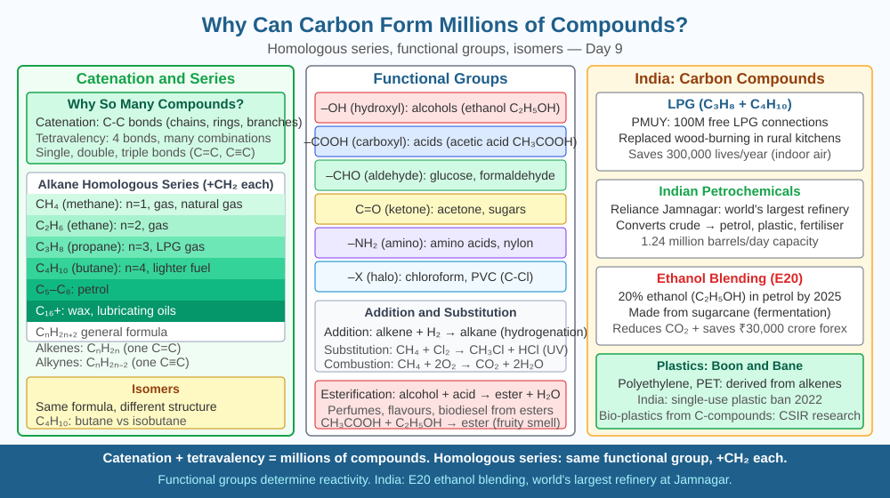

By the end of this lesson, you should be able to define catenation, explain how homologous series and functional groups multiply the number of possible carbon compounds, and predict how the variety of organic compounds would collapse if carbon could not bond to itself.
The number of known carbon compounds passed 10 million some years ago and continues to grow as chemists synthesise new ones. The entire field of organic chemistry — pharmaceuticals, plastics, dyes, fuels, food chemistry — is built almost entirely on carbon. By contrast, there are fewer than a million known compounds of all the other 118 elements put together. Why does one element dominate chemistry so overwhelmingly? Carbon has four bonds, yes — but so does silicon. What else does carbon do that produces this extraordinary diversity?
Three properties work together to produce carbon's millions of compounds: catenation, the stability of C–C bonds at ordinary temperatures, and the possibility of functional groups.
Catenation — carbon bonding to itself.
Catenation is the ability of an element's atoms to bond with other atoms of the same element in a chain. Carbon demonstrates catenation more than any other element. Carbon can bond to carbon to form:
Sulfur can form short chains (S₈ rings), phosphorus can form some chains, but no element forms chains as long, as varied, and as stable as carbon under normal biological and industrial conditions.
Why does catenation work so well for carbon? The C–C single bond energy is approximately 347 kJ/mol. This is strong enough to be thermally stable at room temperature and body temperature, but reactive enough to be broken by enzymes and reagents in controlled reactions. Silicon–silicon bonds (about 226 kJ/mol) are weaker and break more easily; silicon chains longer than a few atoms are unstable under biological conditions.
Homologous series.
Catenation produces a systematic pattern called a homologous series: a family of compounds that differ from each other by one –CH₂– unit. The alkanes are the simplest example:
| Name | Formula | Carbons |
|---|---|---|
| Methane | CH₄ | 1 |
| Ethane | C₂H₆ | 2 |
| Propane | C₃H₈ | 3 |
| Butane | C₄H₁₀ | 4 |
| Pentane | C₅H₁₂ | 5 |
General formula: CₙH₂ₙ₊₂ for alkanes.
Members of a homologous series show a gradual change in physical properties (boiling point rises as chain length increases) but similar chemical properties (all alkanes undergo combustion and substitution reactions). This predictability makes organic chemistry learnable — understand one member and you can predict the behaviour of the whole series.
Isomers — same formula, different structure.
Catenation and branching together produce isomers: compounds with the same molecular formula but different structural arrangements. Butane (C₄H₁₀) can be arranged as a straight 4-carbon chain (n-butane, boiling point −1°C) or as a branched 3-carbon chain with a methyl group on the central carbon (isobutane, boiling point −12°C). Different boiling points, different physical properties, same molecular formula. As chains get longer, the number of possible isomers grows explosively: C₁₀H₂₂ has 75 structural isomers; C₂₀H₄₂ has over 366,000.
Functional groups — chemical diversity on the carbon backbone.
So far we have only considered hydrocarbons (carbon + hydrogen). The diversity multiplies enormously when other atoms replace hydrogen atoms at specific positions:
Each functional group confers specific chemical reactivity regardless of chain length — ethanol (C₂) and decanol (C₁₀) are both oxidised to aldehydes by the same reagents. Chain length governs physical properties (boiling point, solubility); the functional group determines chemical behaviour. Combining chain length × branching × ring vs open × functional group position yields millions of distinct, stable molecules.
Carbon compounds can be thought of as a building system with three independent variables:
Changing any one of these three independently creates a new compound. Because all three can vary simultaneously, the number of possible compounds is essentially unlimited.
Key cause-and-effect: catenation (C–C bonds) → long chains and rings → isomers and homologous series → functional groups add chemical diversity → millions of compounds.
Without catenation, you could only have single-carbon molecules like CH₄, CO₂, CH₃OH — a few dozen simple compounds, not millions.
The included SVG shows a branching tree:

The molecular formula C₃H₈O has three possible structural isomers: propan-1-ol (–OH at chain end, bp 97°C), propan-2-ol (–OH on middle carbon, bp 83°C, the active ingredient in hand sanitisers), and methoxymethane (oxygen bridge, bp −25°C). Same atoms, entirely different boiling points and chemical reactivities.
Using catenation and functional groups, explain why position of the –OH group changes boiling point even between propan-1-ol and propan-2-ol. Then predict: if you added one –CH₂– unit to each isomer, would boiling points rise or fall, and by roughly how much?
What unique property of carbon allows it to form millions of compounds?
Correct answer: b
Why does understanding carbon's catenation mechanism matter more than listing compounds?
Correct answer: c
What would happen to the variety of organic compounds if carbon could not bond to itself?
Correct answer: c
Explain today's concept to a younger student in 60 seconds without technical jargon. Then explain it again using the correct scientific vocabulary.
If both explanations describe the same mechanism, you have understood the concept rather than memorised it.
A typical protein is 300–500 amino acids long, each amino acid being a different functional group on a carbon backbone. The number of distinct protein sequences of length 300, using 20 amino acid types, is 20³⁰⁰ — a number with nearly 400 digits, dwarfing the count of atoms in the observable universe. Life has spent 4 billion years finding the tiny subset of sequences that fold correctly and perform useful chemistry. Catenation is what creates that exploration space in the first place.
Carbon forms millions of compounds because of catenation — its ability to bond carbon to carbon in straight chains, branched chains, and rings — which, combined with the variation in chain length (homologous series), structural arrangement (isomers), and functional groups (–OH, –COOH, –NH₂), generates a space of possible molecules large enough to build all of organic chemistry and all of life.